Cognitively-Enhanced Robotic Manipulation
across Sea, Air, and Land
Mechanical Engineering Department, Computer Science Department, and Maryland Robotics Center
University of Maryland, College Park
Robot Manipulation: Increased Morphological Complexity

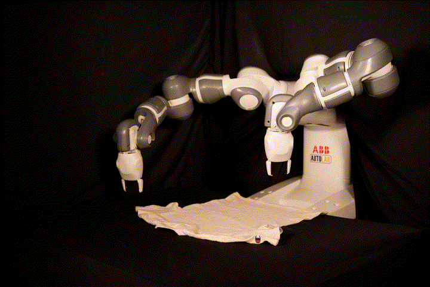
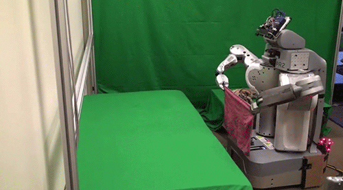
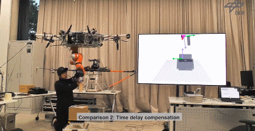
Robot Manipulation: Expanding Workspaces
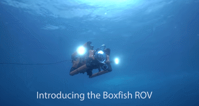
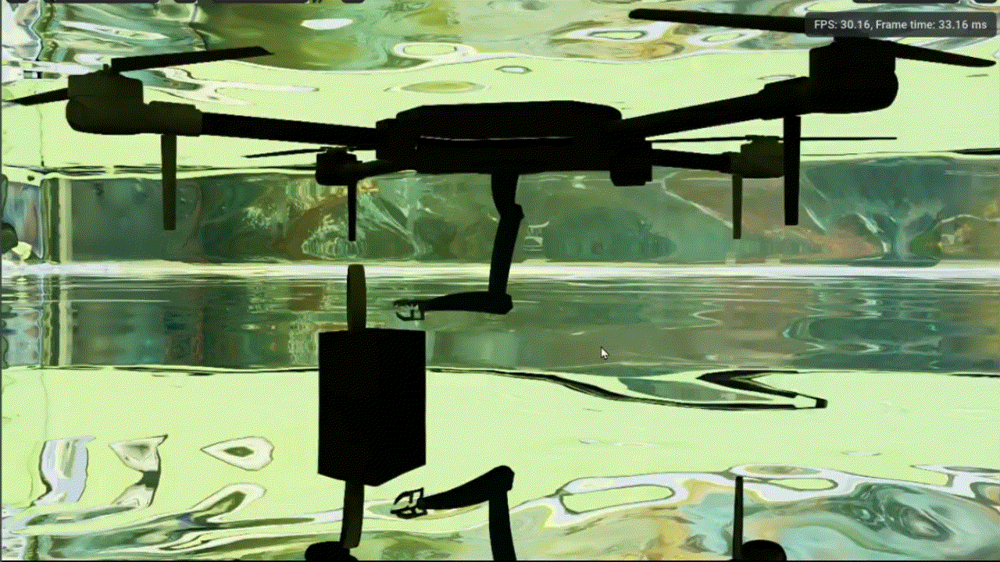
Ours, Aerial-Aquatic Manipulators, Under Review
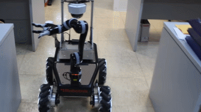
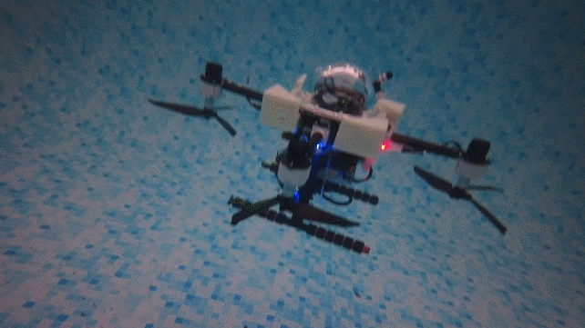
Robot Manipulation: Increased Intelligence
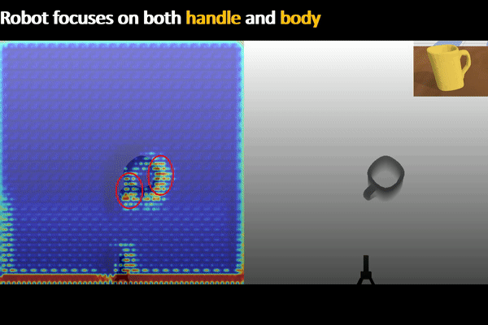

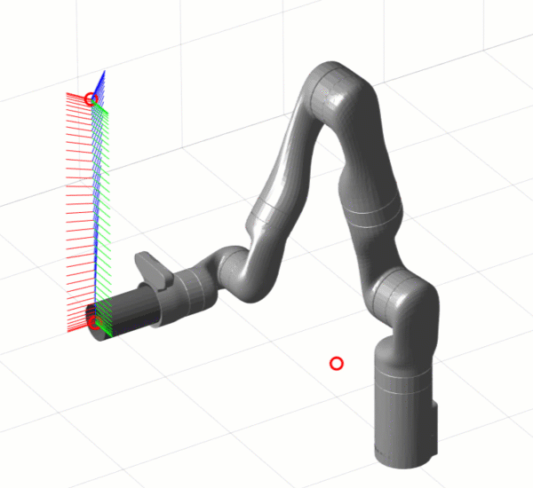
Perception
Action/Planning
Perception-Action Coupling
Perception-Planning Coupling
Self-Explanation for Robot Learning
Robot Manipulation: Increased Intelligence
Ours, Self-Explanation for RL from Demos, AAAI 24'
Ours, Affordance-Aware Imitation Learning, IROS 21'
Ours, Explainable Planning, AAMAS 19'
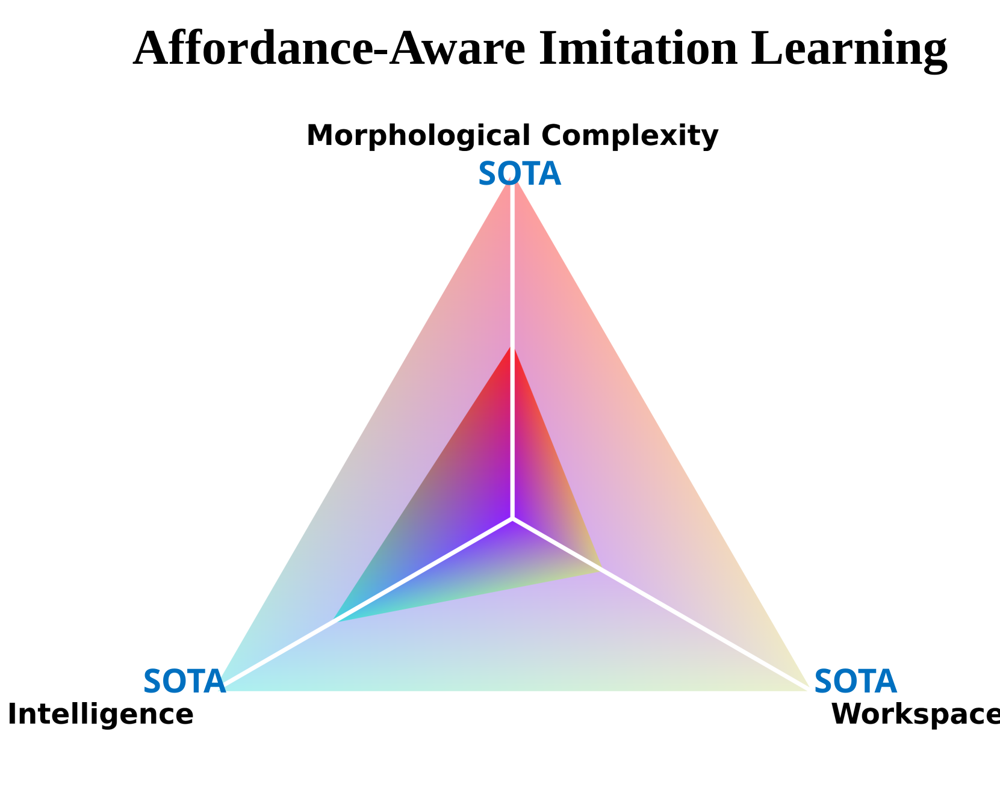

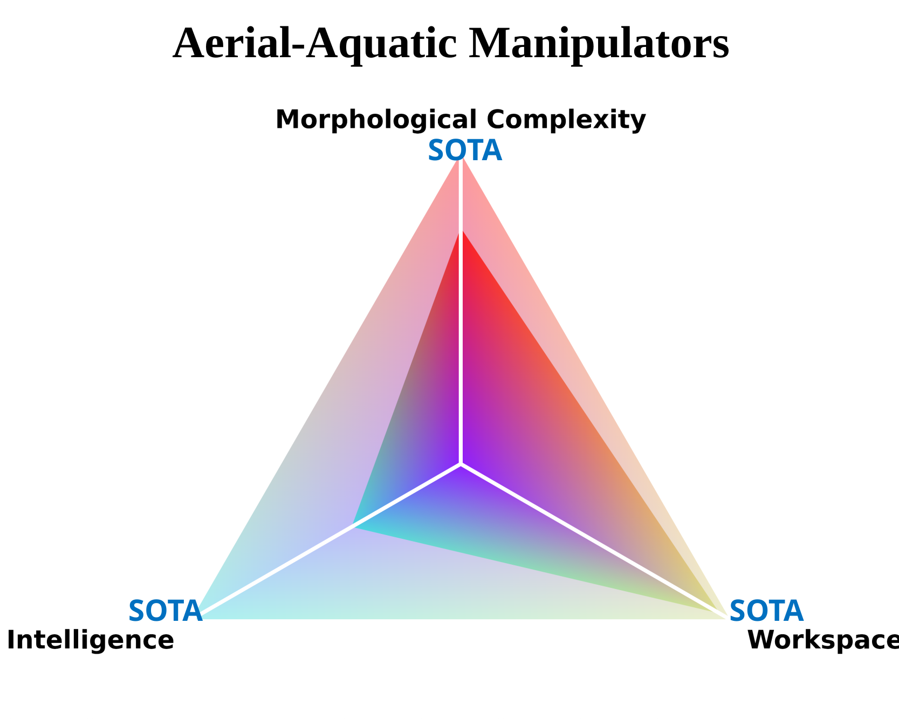
AAM-SEALS: Developing Aerial-Aquatic, Manipulators, in SEa, Air, and Land Simulator
Sri Kiran Kommaraju, Karthikeya Kona, Xiaomin Lin, Yantian Zha
* The first four authors contributed equally, and are listed in alphabetical order.

Aerial-Aquatic, Manipulator Design
SEa Air, Land Simulator Design
Compare:
Rigid-Body Hydrodynamics
and
Particle-based Hydrodynamics
Aerial-Aquatic, Manipulator Design
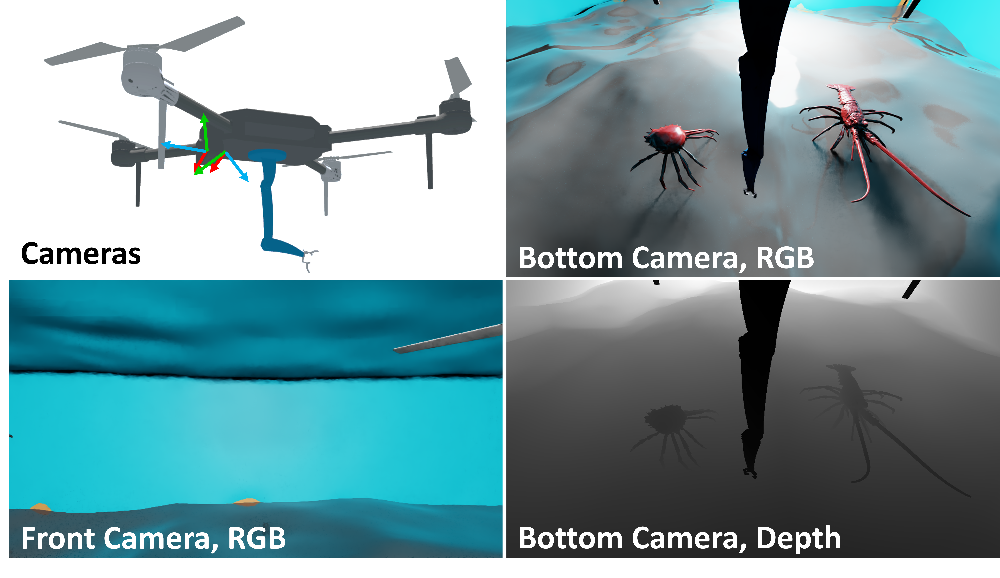

Aerial-Aquatic, Manipulator Design
SEa Air, Land Simulator Design
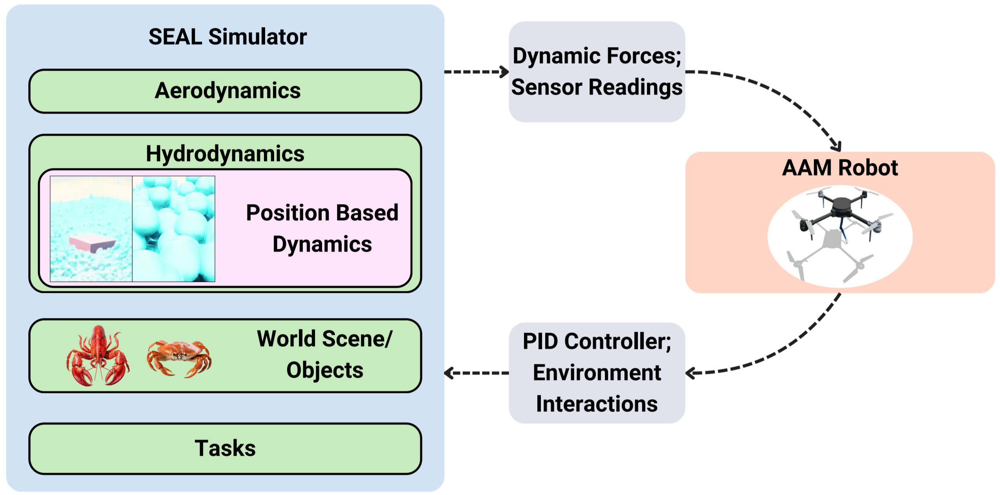
Reinforcement Learning Results
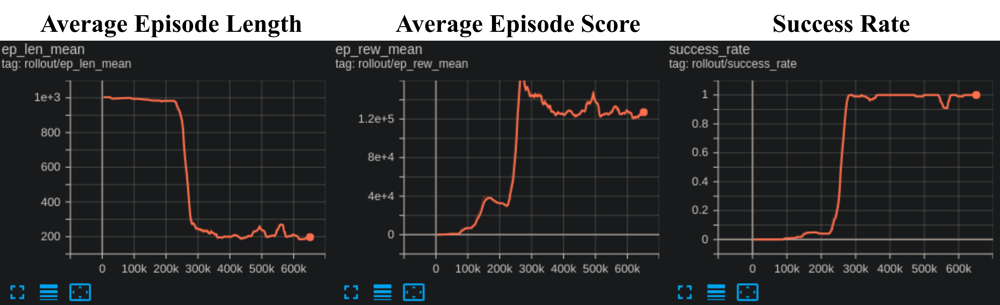